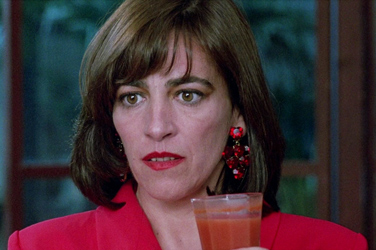
Carmen Maura - Pepa Marcos
Antonio Banderas - Carlos
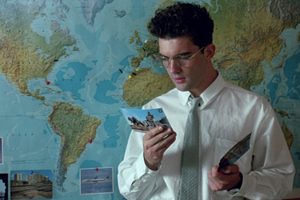
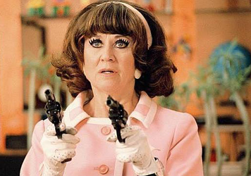
Julieta Serrano - Lucía
Rossy de Palma - Marisa
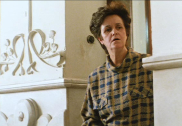
Chus Lampreave - Portera Testiga de Jehová
Kiti Mánver - Paulina Morales
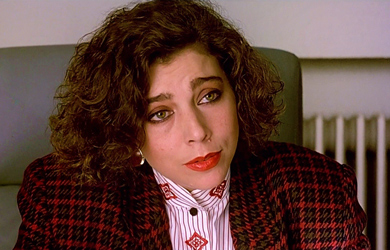
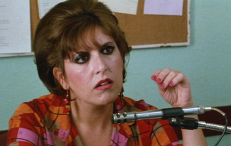
Loles León - Secretaria
Madre Lucía
Agustin Almodóvar - Estate Agent
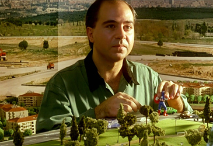
The film plot takes its starting point from the French play The Human Voice (La Voix Humaine - 1930) by Jean Cocteau where a desperate woman tries to avoid being dumped by her lover through a series of phone calls. In the film, TV actress Pepa Marcos is depressed and taking sleeping pills because her boyfriend Iván has just left her. Both she and Iván work as voice-over actors who dub foreign films, notably Johnny Guitar with Joan Crawford and Sterling Hayden. The voice he uses to sweet-talk her (and many other women) is the same one he uses in his work. He is about to leave on a trip and has asked Pepa to pack his things in a suitcase that he will pick up later.
Pepa returns home later to find her answering machine filled with frantic messages from her friend, Candela. In anger, she rips out the phone and throws it through the window onto the balcony. Candela arrives, still overwhelmed, but before she can explain her situation, Carlos, Iván's son with previous lover Lucía, arrives with his snobbish fiancée, Marisa. It turns out they are apartment-hunting, and by coincidence have chosen Pepa's penthouse to look at. Carlos and Pepa figure out each other's relationship to Iván; Pepa wants to know where Iván is because she has to tell him something, but Carlos doesn't know where his father is. Candela unsuccessfully attempts to kill herself by jumping off the balcony.
Meanwhile, Marisa has become bored and decides to drink some gazpacho she finds in the fridge, not realizing that it has been spiked with sleeping pills. Candela finally gets to explain her situation: a while ago she had a love affair with an Arab who later came to visit her, bringing some friends with him. It turns out that they are a Shiite terrorist cell and Candela was unknowingly harboring them in her home. When the terrorists left, Candela fled to Pepa's place for help. Candela fears that the police think she is involved and will come for her. Pepa sets out to see a lawyer Carlos has recommended to help Candela, and ends up catching the same cab with the same Mambo-loving driver.
However, Paulina, the lawyer she visits, is acting strangely. Pepa sees that Paulina has tickets to Stockholm. Iván calls the office at one point, and Paulina seems to know Pepa, and is very rude to her. Meanwhile, Candela reveals to Carlos that the Shiites plan to hijack a flight to Stockholm that evening and divert it to Beirut, where the Shiite terrorists have a friend who was captured by the authorities. After Carlos fixes the broken phone, he quickly calls the police, but hangs up before (he believes) they can trace the call, then surprisingly kisses Candela. Pepa returns and Lucía calls, announcing she is coming over to confront her about Iván. Carlos reveals that Lucía has been in a mental hospital since Iván left her and has only now been released. Pepa, now sick of Iván and no longer wanting to see him, heads back down with Iván's suitcase; she throws it out, just barely missing Iván, who has arrived with Paulina on their way to the airport. He leaves Pepa a message.
Pepa returns to her apartment and hears the song from the opening, "Soy Infeliz", which Carlos is playing. Enraged, Pepa yanks off the record and throws it out of the window, and it ends up hitting Paulina. Pepa then hears Iván's message and once again rips out the phone and throws the answering machine back out of the window; it lands on Paulina's car. Back in the apartment, Lucía arrives, along with the phone repairman and the police, who have traced Carlos' earlier call. Candela starts to panic, but Carlos comes up with an idea: to serve everyone the spiked gazpacho. The policemen and repairman are knocked out, Carlos and Candela make out on the sofa and also fall asleep, and Lucía grabs the policemen's guns and aims them at Pepa, who figures out that Paulina is the other woman Iván is going to Stockholm with, and that their flight is the one that the terrorists are planning to hijack. Lucía reveals that she is still insane and only faked sanity when she heard Iván's voice dubbed on a foreign film. She throws the gazpacho into Pepa's face and rushes to the airport to kill Iván; she sees a motorcyclist and forces him to act as her driver.
Pepa chases her and is joined by her neighbour Ana, who happens to be the motorcyclist's stood-up girlfriend. They quickly hail a cab (driven by the Mambo taxi driver again) and a mad chase ensues to the airport, with Lucía firing the gun at them. Lucía arrives at the airport, sees that Iván and Paulina are about to pass security, and aims her gun at them. Pepa arrives just in time and thwarts the murder attempt by rolling a luggage cart at Lucía. Iván runs over to Pepa, who is now mentally and physically exhausted after two days of trying to chase down her lover. Iván offers to finally speak with her about whatever she has been trying to speak to him about, and for a moment, it seems he might even leave Paulina to take her back. But Pepa refuses, saying, "There was still time last night, this morning, even today at noon. But now it's too late". Having saved his life, she leaves the airport, and Iván, for good.
Pepa returns to her home, which is a mess with a burnt bedroom, broken windows, a telephone ripped from the wall, spilled gazpacho on the floor, her menagerie of chickens and geese running around loose, and several unconscious visitors all overdosed on sleeping pills. Pepa sits on her balcony where Marisa has just woken up. The two women chat, sharing a moment of tranquility at the end of a hectic 48 hours, and Pepa finally reveals what her big news for Iván was: she's pregnant.
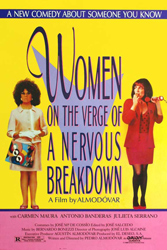
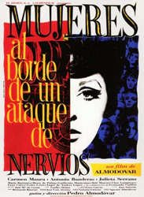
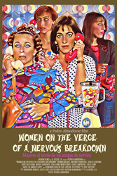
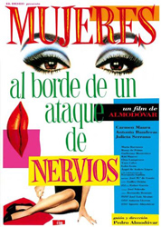